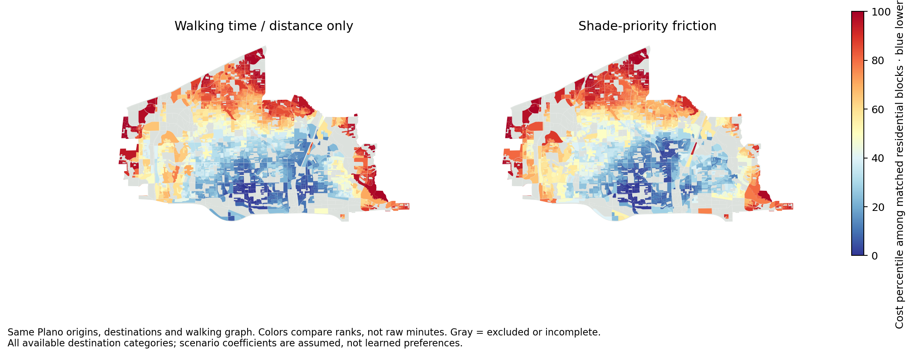
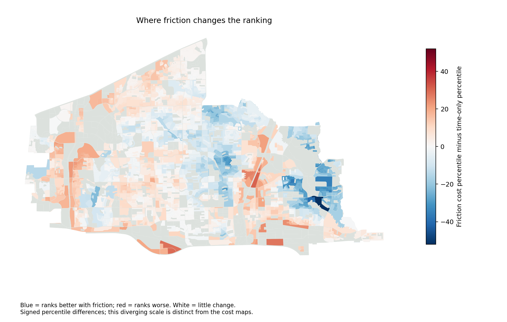
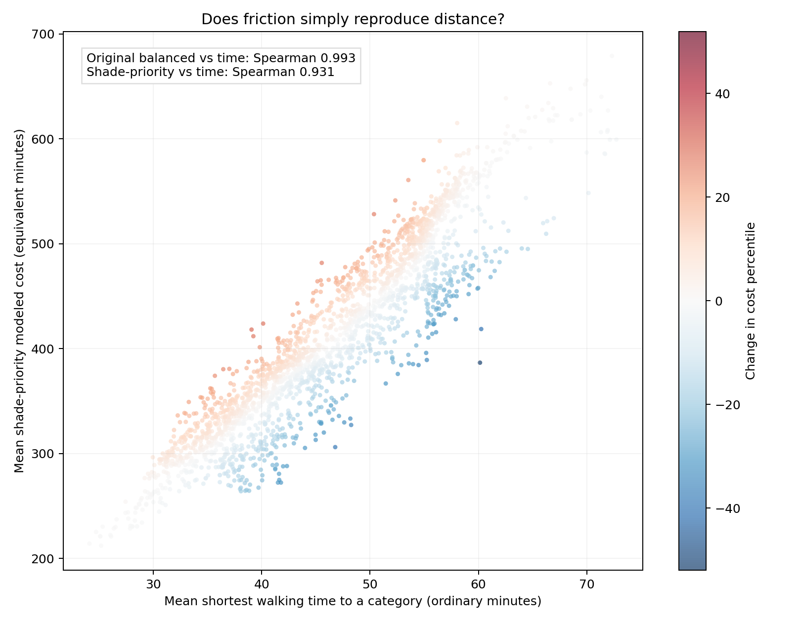

Same origins. Same places. Same graph.
Is friction just distance?
Much of the ranking still follows distance. The shade-priority scenario deliberately changes the trade-off, so tree-adjacent detours can win. These comparisons measure model differences, not real-world preference accuracy.

Where the rankings change

How closely the scores track

Can 50 minutes with trees beat 20 minutes exposed?
In the illustrative preference test, a 20-minute exposed route scores 235.8 model-equivalent minutes; a 50-minute tree-adjacent route scores 76.6. The longer route wins under this scenario.
This is a synthetic test of the equation—not a claim that an observed Plano pair has those exact conditions. Nearby trees are a proxy, not measured time-specific shade.

The coefficient 6 and squared canopy deficit express the requested strong shade preference. Finer edge-corridor tree estimates also differ from the old model's block averages. Neither change is a fitted or validated human-comfort coefficient.
Exact comparison method and data
The reference profile is bank, grocery and pharmacy. Comparison includes 2,346 housing-positive blocks with complete category routes and a reference-node gap of no more than 100 m. The speed is fixed at 1.2 m/s, so time-only and distance-only routing are equivalent. Rank change is friction cost percentile minus time-only cost percentile; positive values rank worse.
19 of the top 20 balanced/time-only areas overlap. Under shade priority, 16 of the top 20 overlap. Median absolute percentile change is 6.2 points; the maximum is 51.0 points.
Metrics and qualifications · Block comparison data · Shade-priority equation and synthetic test